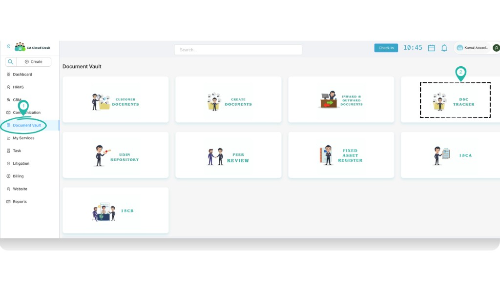
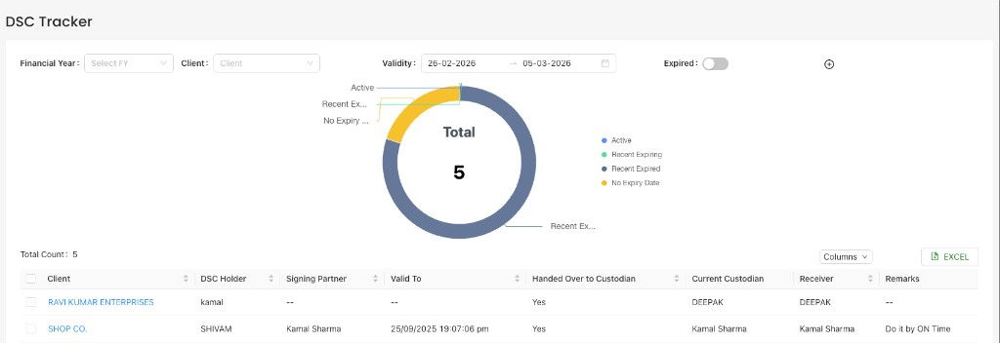
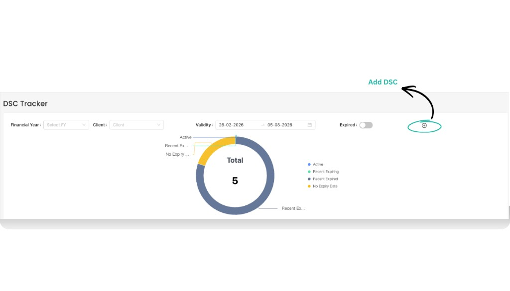
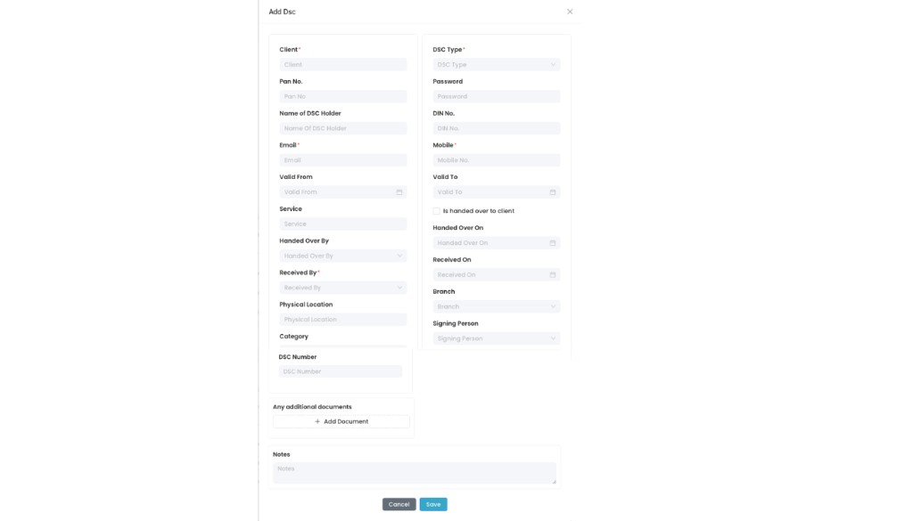
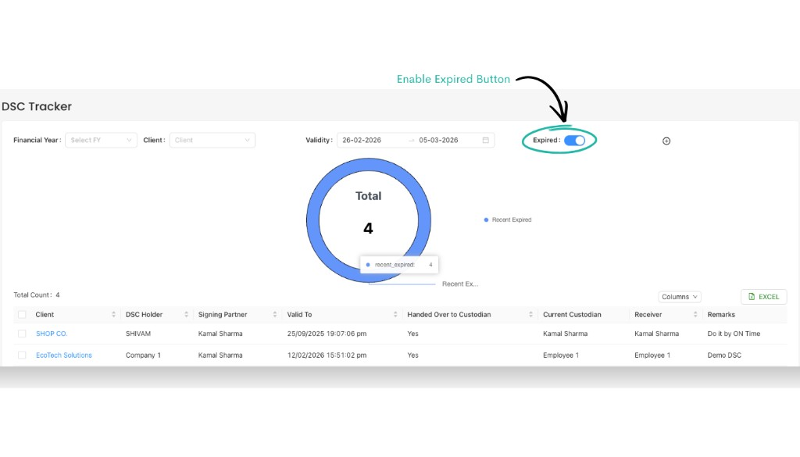

DSC Tracker
Use the DSC Tracker in Document Vault to maintain a central register of all Digital Signature Certificates (DSCs) for your clients—who holds them, where they are kept, and when they expire—so that you never miss a renewal. Use the View PDF Guide button in the left sidebar to open the full guide in a new tab (same as opening a downloaded PDF).
Overview
The DSC Tracker lets you track all DSCs issued for your clients in one place. You can see how many DSCs are active, which ones are expiring soon, which have already expired, and which DSCs have no expiry date. You can also record where the physical token is kept and who is responsible for handing it over or receiving it.
From this module you can:
- Filter DSCs by Financial Year, Client, and Validity period.
- Add new DSC records with complete details.
- View active, recently expiring, and recently expired DSCs on a clear chart.
- Switch to view only expired DSCs and export the list to Excel.
Login and Open DSC Tracker
- Login to your CA Cloud Desk account.
- From the left panel, click Document Vault.
- On the Document Vault screen, select the DSC Tracker card.
From the dashboard, choose Document Vault from the left side panel.

In Document Vault, click the DSC Tracker card to open the module.
Understand the DSC Tracker Dashboard
On the DSC Tracker screen you will see a donut chart and a list of all DSCs matching your filters.

DSC Tracker dashboard – donut chart on top with the detailed DSC list below.
Use the filters at the top:
- Financial Year – limit DSCs to a particular FY (optional).
- Client – view DSCs for a specific client or keep it blank to see all.
- Validity – choose a From and To date to see DSCs valid in that range.
- Expired toggle – keep this Off to see active and upcoming expiries only. Turn it On to see expired DSCs (explained below).
Read the donut chart:
- Active – DSCs currently valid.
- Recent Expiring – DSCs whose validity is ending soon (near your selected date range).
- Recent Expired – DSCs that have just expired.
- No Expiry Date – DSCs where no expiry date has been recorded.
The grid below the chart shows full details for each DSC: client name, DSC holder, signing partner, validity, custodian, receiver, branch, and remarks. You can also use the Excel button to export the current list.
Add a New DSC
Whenever a new DSC is issued for any client, record it in the DSC Tracker.
- On the DSC Tracker screen, click the Plus icon (Add DSC) on the top-right.
-
The Add Dsc form opens. Fill the details carefully:
- Client – Select the client for whom the DSC is issued.
- PAN No. – Enter the PAN number of the DSC holder.
- Name of DSC Holder – Person or entity whose name is printed on the DSC token.
- Email and Mobile – Contact details linked with the DSC.
- Valid From and Valid To – Start and end dates of the DSC validity.
- Service – Select the service or purpose for which the DSC is used.
- DSC Type – Choose the DSC class/type (for example, Class 3, Token, etc.).
- Password – Store the DSC token password (as per your firm’s policy).
- DIN No. – Director Identification Number, if applicable.
- Physical Location – Where the DSC token is kept (for example, “Head Office locker” or “Branch – Delhi”).
- Category – Internal category you want to group this DSC under.
- DSC Number – Unique DSC / token number printed on the device or certificate.
- Is handed over to client – Turn this on if the token is handed over to the client.
- Handed Over By and Handed Over On – Who gave the token and on which date.
- Received By and Received On – Who received the token and when (for return / internal handover).
- Branch – Select the branch responsible for this DSC.
- Signing Person – Partner / authorized signatory who signs using this DSC.
- Any additional documents – Attach any supporting files (for example, approval letter or KYC documents).
- Notes – Add remarks such as “Use only for GST filings” or “Renew before month-end”.
- After filling all mandatory fields, click Save. The new DSC entry will appear in the list and in the chart counts.

Use the plus (+) icon on the DSC Tracker to open the Add Dsc form.

Add Dsc form – capture client details, validity, location, custodian, and important notes.
Track Expiring and Expired DSCs
Once DSCs are recorded, you can easily check which ones are about to expire or already expired.
- Use the Validity date range to focus on DSCs near a particular period. The donut chart will highlight Recent Expiring and Recent Expired segments.
- To see only expired DSCs, enable the Expired toggle on the top-right. The chart and list will refresh to show DSCs whose Valid To date has already passed.
- Use the Excel button to download the expired DSC list and share it with your team for renewal planning.

Turn on the Expired toggle to focus only on DSCs whose validity has already ended.
Best Practices
- Update immediately: Add or edit DSC entries as soon as a new DSC is issued or renewed.
- Maintain accurate locations: Keep Physical Location and custodian details up to date to avoid misplaced tokens.
- Use notes smartly: Record any restrictions (for example, “Only for ROC filings”) so your team uses DSCs correctly.
- Review regularly: At least once a week, filter by upcoming dates and check expiring DSCs to plan renewals.